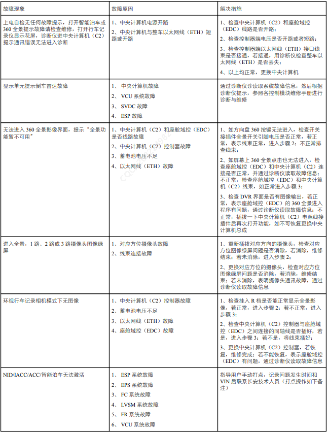
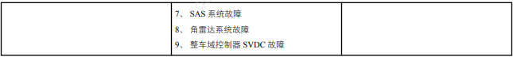
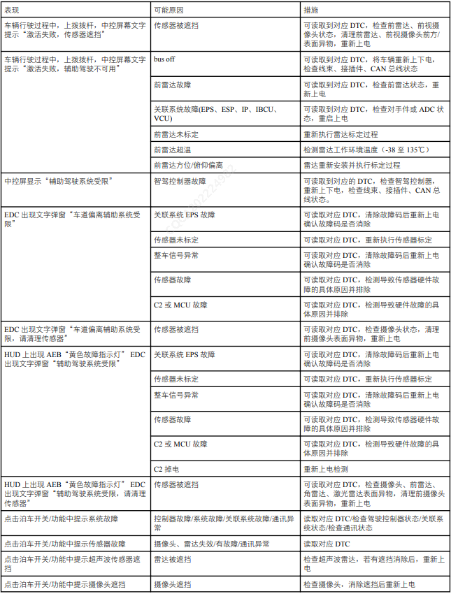

Общие приборы для проверки: автомобильный диагностический прибор, компьютерный диагностический прибор и т.д.
Подтвердить жалобу клиента:
1. Визуально проверить наличие явных следов механических, эксплуатационных повреждений (подтеки воды и т.д.) или повреждений электрооборудования;
2. Визуально проверить, находится ли уровень охлаждающей жидкости в расширительном бачке моторного отсека выше минимальной отметки.
3. Если обнаружена очевидная причина наблюдаемой или заявленной проблемы, перед переходом к следующему шагу необходимо сначала устранить эту причину;
4. Если визуальная проверка пройдена успешно, считать информацию о версии и неисправностях центрального компьютера с помощью диагностического прибора и выполнить ремонт в соответствии с таблицей симптомов неисправностей. Таблица диагностики неисправностей приведена ниже:
Внимание: после завершения ремонта неисправности обязательно удалить связанные коды неисправностей центрального компьютера.
Список кодов неисправностей DTC и простые методы устранения
| № | Категория | Подкатегория | Код DTC | Тип и Описание неисправности | Возможные причины неисправности | Рекомендации по ремонту | Связанный контроллер |
| 1 | Класс связи системной шины | Передача данных по Ethernet | U1B4A01 | Непредвиденный обрыв соединения Ethernet лидара | Обрыв цепи или обесточивание сопряженного устройства | Проверить соединение цепи и рабочее состояние сопряженного устройства | Lidar |
| 2 | Класс связи системной шины | Передача данных по Ethernet | U1B4A05 | Низкое качество сигнала Ethernet после стабилизации соединения лидара | Возможна аппаратная неисправность передатчика Ethernet, плохое качество кабеля, внешние помехи или длина кабеля превышает 15 м, | Заменить аппаратную часть, проверить качество и длину коммуникационного кабеля | Lidar |
| 3 | Класс связи системной шины | Передача данных по Ethernet | U1B4D01 | Непредвиденный обрыв соединения Ethernet VIU_FL | Обрыв цепи или обесточивание сопряженного устройства | Проверить соединение цепи и рабочее состояние сопряженного устройства | VIU_FL |
| 4 | Класс связи системной шины | Передача данных по Ethernet | U1B4D05 | Низкое качество сигнала Ethernet после стабилизации соединения VIU_FL | Возможна аппаратная неисправность передатчика Ethernet, плохое качество кабеля, внешние помехи или длина кабеля превышает 15 м, | Заменить аппаратную часть, проверить качество и длину коммуникационного кабеля | VIU_FL |
| 5 | Класс связи системной шины | Передача данных по Ethernet | U1B4E01 | Непредвиденный обрыв соединения Ethernet EDC | Обрыв цепи или обесточивание сопряженного устройства | Проверить соединение цепи и рабочее состояние сопряженного устройства | EDC |
| 6 | Класс связи системной шины | Передача данных по Ethernet | U1B4E05 | Низкое качество сигнала Ethernet после стабилизации соединения EDC | Возможна аппаратная неисправность передатчика Ethernet, плохое качество кабеля, внешние помехи или длина кабеля превышает 15 м, | Заменить аппаратную часть, проверить качество и длину коммуникационного кабеля | EDC |
| 7 | Категория контроля напряжения питания | ECU Power | B190001 | Неисправность напряжения основного источника питания | Недопустимое напряжение питания | Проверить состояние аккумуляторной батареи и генератора. | - |
| 8 | Категория системной связи по шине | Шина отключена (Bus-Off) | U1B0001 | Шина ADAS_CAN отключена (Bus-Off) | Неисправность шины CAN или ECU | Проверить шину CAN или Заменить ECU. | VIU_FL |
| 9 | Категория системной связи по шине | Шина отключена (Bus-Off) | U1B0002 | Шина ADASA1_CAN отключена (Bus-Off) | Неисправность шины CAN или ECU | Проверить шину CAN или Заменить ECU. | FR |
| 10 | Категория системной связи по шине | Шина отключена (Bus-Off) | U1B0003 | Шина ADASC1_CAN отключена (Bus-Off) | Неисправность шины CAN или ECU | Проверить шину CAN или Заменить ECU. | Задний угловой радар |
| 11 | Класс связи системной шины | Ошибка связи | U1B1087 | Таймаут коммуникационного сообщения узла ADASCAN_VIUFL, не связанного с функциональной безопасностью | 1. Неисправность жгута проводов; 2. Неисправность VIUFL | 1. Проверить состояние VIUFL; 2. Проверить жгут проводов; 3. Выполнить повторный цикл включения питания | VIU_FL |
| 12 | - | - | U1B1088 | Таймаут коммуникационного сообщения узла ADASCAN_VIUFL, связанного с функциональной безопасностью | 1. Неисправность жгута проводов; 2. Неисправность VIUFL | 1. Проверить состояние VIUFL; 2. Проверить жгут проводов; 3. Выполнить повторный цикл включения питания | VIU_FL |
| 13 | Класс связи системной шины | Ошибка связи | U1B1183 | Ошибка проверки CRC или RC узла ADASCAN_VIUFL, не связанного с функциональной безопасностью | 1. Неисправность жгута проводов; 2. Неисправность разъема; 3. Неисправность EPB | 1. Проверить состояние EPB; 2. Выполнить повторный цикл включения питания | VIU_FL |
| 14 | Класс связи системной шины | Ошибка связи | U1B1489 | Таймаут коммуникационного сообщения узла заднего углового радара ADASC1CAN | 1. Неисправность жгута проводов; 2. Неисправность заднего углового радара | 1. Проверить жгут проводов; 2. Проверить задний угловой радар; 3. Выполнить повторный цикл включения питания | Угловой радар |
| 15 | Класс связи системной шины | Ошибка связи | U1B1589 | Ошибка проверки CRC узла заднего углового радара ADASC1CAN | 1. Неисправность жгута проводов; 2. Неисправность заднего углового радара | 1. Проверить жгут проводов; 2. Проверить задний угловой радар; 3. Выполнить повторный цикл включения питания | Угловой радар |
| 16 | Класс связи системной шины | Ошибка связи | U1B1590 | Ошибка проверки RC узла заднего углового радара ADASC1CAN | 1. Неисправность жгута проводов; 2. Неисправность заднего углового радара | 1. Проверить жгут проводов; 2. Проверить задний угловой радар; 3. Выполнить повторный цикл включения питания | Угловой радар |
| 17 | Класс связи системной шины | Ошибка связи | U1B1288 | ADASA1CAN_FR节点通信报文超时 | 1. Неисправность жгута проводов; 3. Неисправность FR | 1. Проверить жгут проводов; 2. Проверить состояние FR; 3. Выполнить повторный цикл включения питания | FR |
| 18 | Класс связи системной шины | Ошибка связи | U1B1383 | ADASA1CAN_FR节点CRC校验错误 | 1. Неисправность жгута проводов; 2. Неисправность разъема; 3. Неисправность FR | 1. Проверить состояние FR; 2. Выполнить повторный цикл включения питания | FR |
| 19 | Класс связи системной шины | Ошибка связи | U1B1384 | ADASA1CAN_FR节点RC校验错误 | 1. Неисправность жгута проводов; 2. Неисправность разъема; 3. Неисправность FR | 1. Проверить состояние FR; 2. Выполнить повторный цикл включения питания | FR |
| 20 | Синхронизация времени | Ошибка связи | U1B1783 | Неисправность синхронизации времени | 1. Рассинхронизация времени левого/правого лидара; 2. Рассинхронизация времени INS; 3. Рассинхронизация времени FR; 4. Рассинхронизация времени одного или нескольких угловых радаров; 5. Рассинхронизация времени SOC; 6. Рассинхронизация времени MCU; 7. Рассинхронизация времени VIU | 1. Проверить состояние рассинхронизации времени | - |
| 21 | Класс связи системной шины | Неисправность связанной системы | U1B3001 | Статус «Неисправность EPS»: недействителен или неисправность | Неисправность EPS | 1. Проверить состояние EPS; 2. Выполнить повторный цикл включения питания | EPS |
| 22 | Класс связи системной шины | Неисправность связанной системы | U1B3101 | Угловая скорость рулевого колеса: недействительно или неисправность | Неисправность EPS | 1. Проверить состояние EPS; 2. Выполнить повторный цикл включения питания | EPS |
| 23 | Класс связи системной шины | Неисправность связанной системы | U1B3201 | Угол поворота рулевого колеса: недействительно или неисправность | Неисправность EPS | 1. Проверить состояние EPS; 2. Выполнить повторный цикл включения питания | EPS |
| 24 | Класс связи системной шины | Неисправность связанной системы | U1B3301 | Отказ датчика угла поворота рулевого колеса: недействительно или неисправность | Неисправность EPS | 1. Проверить состояние EPS; 2. Выполнить повторный цикл включения питания | EPS |
| 25 | Класс связи системной шины | Неисправность связанной системы | U1B3401 | Сигнал, передаваемый контроллером кузовного домена: недействителен или неисправность | Неисправность BDC | 1. Проверить состояние BDC; 2. Выполнить повторный цикл включения питания | BDC |
| 26 | Класс связи системной шины | Неисправность связанной системы | U1B3501 | Поперечное ускорение: недействительно или неисправность | Неисправность ESP | 1. Проверить состояние SRS; 2. Выполнить повторный цикл включения питания | SRS |
| 27 | Класс связи системной шины | Неисправность связанной системы | U1B3601 | Скорость рыскания: недействительно или неисправность | Неисправность ESP | 1. Проверить состояние SRS; 2. Выполнить повторный цикл включения питания | SRS |
| 28 | Класс связи системной шины | Неисправность связанной системы | U1B3701 | Продольное ускорение: недействительно или неисправность | Неисправность ESP | 1. Проверить состояние SRS; 2. Выполнить повторный цикл включения питания | SRS |
| 29 | Класс связи системной шины | Неисправность связанной системы | U1B3801 | Неисправность сигнала обнаружения отпускания рулевого колеса | Неисправность HOD | 1. Проверить состояние BDC; 2. Выполнить повторный цикл включения питания | HOD |
| 30 | Класс связи системной шины | Неисправность связанной системы | U1B3901 | Сигнал неисправности SRS (сигнал контрольной лампы) | Неисправность SRS | 1. Проверить состояние SRS; 2. Выполнить повторный цикл включения питания | SRS |
| 31 | Класс связи системной шины | Неисправность связанной системы | U1B3A02 | Сигнал скорости автомобиля: недействителен или неисправность | Неисправность ESP | 1. Проверить состояние ESP; 2. Выполнить повторный цикл включения питания | ESP |
| 32 | Класс связи системной шины | Неисправность связанной системы | U1B3A03 | Неисправность ABS: недействительно или неисправность | Неисправность ESP | 1. Проверить состояние ESP; 2. Выполнить повторный цикл включения питания | ESP |
| 33 | Класс связи системной шины | Неисправность связанной системы | U1B3A04 | Неисправность TCS/ESP: недействительно или неисправность | Неисправность ESP | 1. Проверить состояние ESP; 2. Выполнить повторный цикл включения питания | ESP |
| 34 | Класс связи системной шины | Неисправность связанной системы | U1B3A05 | Доступность функции AEB (автоматическое экстренное торможение): недействительно или неисправность | Неисправность ESP | 1. Проверить состояние ESP; 2. Выполнить повторный цикл включения питания | ESP |
| 35 | Класс связи системной шины | Неисправность связанной системы | U1B3A06 | Состояние ошибки информации VCU (обнаружена ошибка сигнала системы круиз-контроля) | Нарушение функционирования C2 | 1. Проверить состояние C2; 2. Выполнить повторный цикл включения питания | C3B |
| 36 | Класс связи системной шины | Неисправность связанной системы | U1B3A07 | Блоком IBCU обнаружено нарушение связи с системой AD | Неисправность IBCU/ADC | 1. Проверить состояние IBCU/ADC; 2. Выполнить повторный цикл включения питания | IBCU/C2 |
| 37 | Класс связи системной шины | Неисправность связанной системы | U1B3A08 | Импульсы скорости правого заднего колеса: недействительно или неисправность | Неисправность ESP | 1. Проверить состояние ESP; 2. Выполнить повторный цикл включения питания | ESP |
| 38 | Класс связи системной шины | Неисправность связанной системы | U1B3A09 | Сигнал скорости правого заднего колеса: недействителен или неисправность | Неисправность ESP | 1. Проверить состояние ESP; 2. Выполнить повторный цикл включения питания | ESP |
| 39 | Класс связи системной шины | Неисправность связанной системы | U1B3A0A | Импульсы скорости правого переднего колеса: недействительно или неисправность | Неисправность ESP | 1. Проверить состояние ESP; 2. Выполнить повторный цикл включения питания | ESP |
| 40 | Класс связи системной шины | Неисправность связанной системы | U1B3A0B | Сигнал скорости правого переднего колеса: недействителен или неисправность | Неисправность ESP | 1. Проверить состояние ESP; 2. Выполнить повторный цикл включения питания | ESP |
| 41 | Класс связи системной шины | Неисправность связанной системы | U1B3A0C | Импульсы скорости левого заднего колеса: недействительно или неисправность | Неисправность ESP | 1. Проверить состояние ESP; 2. Выполнить повторный цикл включения питания | ESP |
| 42 | Класс связи системной шины | Неисправность связанной системы | U1B3A0D | Сигнал скорости левого заднего колеса: недействителен или неисправность | Неисправность ESP | 1. Проверить состояние ESP; 2. Выполнить повторный цикл включения питания | ESP |
| 43 | Класс связи системной шины | Неисправность связанной системы | U1B3A0E | Импульсы скорости левого переднего колеса: недействительно или неисправность | Неисправность ESP | 1. Проверить состояние ESP; 2. Выполнить повторный цикл включения питания | ESP |
| 44 | Класс связи системной шины | Неисправность связанной системы | U1B3A0F | Сигнал скорости левого переднего колеса: недействителен или неисправность | Неисправность ESP | 1. Проверить состояние ESP; 2. Выполнить повторный цикл включения питания | ESP |
| 45 | - | Неисправность связанной системы | U1B3B10 | Состояние готовности функции IBCU: недействительно или неисправность | Неисправность IBCU | 1. Проверить состояние IBCU; 2. Выполнить повторный цикл включения питания | IBCU |
| 46 | - | Неисправность связанной системы | U1B3C02 | Состояние готовности крутящего момента силовой передачи (поддержка отклика круиз-контроля и парковки) | Неисправность VCU | 1. Проверить состояние конфигурации VCU; 2. Выполнить повторный цикл включения питания | VCU |
| 47 | - | Неисправность связанной системы | U1B4001 | Статус «Неисправность EPB»: недействителен или неисправность | Неисправность EPB | 1. Проверить состояние EPB; 2. Выполнить повторный цикл включения питания | EPB |
| 48 | - | Неисправность связанной системы | U1B3C03 | Статус калибровки SAS: недействителен или неисправность | Неисправность EPS | 1. Проверить состояние EPS; 2. Выполнить повторный цикл включения питания | EPS |
| 49 | - | Неисправность связанной системы | U1B4703 | Действительность давления торможения в усилителе: недействительно или неисправность | Неисправность IBCU | 1. Проверить состояние IBCU; 2. Выполнить повторный цикл включения питания | IBCU |
| 50 | - | Неисправность связанной системы | U1B3A11 | Сигнал направления вращения левого переднего колеса: недействителен или неисправность | Неисправность ESP | 1. Проверить состояние ESP; 2. Выполнить повторный цикл включения питания | ESP |
| 51 | - | Неисправность связанной системы | U1B3A12 | Сигнал направления вращения левого заднего колеса: недействителен или неисправность | Неисправность ESP | 1. Проверить состояние ESP; 2. Выполнить повторный цикл включения питания | ESP |
| 52 | - | Неисправность связанной системы | U1B3A13 | Сигнал направления вращения правого переднего колеса: недействителен или неисправность | Неисправность ESP | 1. Проверить состояние ESP; 2. Выполнить повторный цикл включения питания | ESP |
| 53 | - | Неисправность связанной системы | U1B3A14 | Сигнал направления вращения правого заднего колеса: недействителен или неисправность | Неисправность ESP | 1. Проверить состояние ESP; 2. Выполнить повторный цикл включения питания | ESP |
| 54 | - | Неисправность связанной системы | U1B4801 | Фактическая передача автомобиля: недействительно или неисправность | Неисправность VCU | 1. Проверить состояние VCU; 2. Выполнить повторный цикл включения питания | VCU |
| 55 | - | Неисправность связанной системы | U1B4802 | Разрешение управления APA: недействительно или неисправность | Неисправность VCU | 1. Проверить состояние VCU; 2. Выполнить повторный цикл включения питания | VCU |
| 56 | - | Неисправность связанной системы | U1B4803 | Фактическое положение педали акселератора: недействительно или неисправность | Неисправность VCU | 1. Проверить состояние VCU; 2. Выполнить повторный цикл включения питания | VCU |
| 57 | - | Неисправность связанной системы | U1B4806 | Фактический момент затяжки силовой передачи на колесе: недействителен или неисправность | Неисправность VCU | 1. Проверить состояние VCU; 2. Выполнить повторный цикл включения питания | VCU |
| 58 | - | Неисправность связанной системы | U1B4808 | Виртуальное положение педали акселератора: недействительно или неисправность | Неисправность VCU | 1. Проверить состояние VCU; 2. Выполнить повторный цикл включения питания | VCU |
| 59 | - | Неисправность связанной системы | U1B4809 | Неисправность передаваемого сигнала состояния лидара | Неисправность лидара | 1. Проверить состояние лидара; 2. Выполнить повторный цикл включения питания | Lidar |
| 60 | - | Неисправность связанной системы | U1B4200 | Сигнал, передаваемый контроллером переднего радара: недействителен или неисправность | Неисправность FR | 1. Проверить состояние FR; 2. Выполнить повторный цикл включения питания | FR |
| 61 | - | Неисправность связанной системы | U1B4201 | Передний радар перекрыт | Перекрытие FR | 1. Проверить состояние FR; 2. Выполнить повторный цикл включения питания | FR |
| 62 | - | Неисправность связанной системы | U1B4202 | Передний радар не откалиброван надлежащим образом | Неисправность FR | 1. Проверить состояние FR; 2. Выполнить повторный цикл включения питания | FR |
| 63 | Класс связи системной шины | Неисправность связанной системы | U1B4601 | Сигнал состояния заднего углового радара: недействителен или неисправность | Неисправность RLR | 1. Проверить состояние RLR; 2. Выполнить повторный цикл включения питания | RLR |
| 64 | Класс связи системной шины | Неисправность связанной системы | U1B4605 | Перекрытие заднего углового радара | Перекрытие RLR | 1. Удалить посторонние предметы, вызывающие перекрытие | RLR |
| 65 | Класс связи системной шины | Неисправность связанной системы | U1B4609 | Задний угловой радар не откалиброван | RLR не откалиброван | 1. Выполнить повторную калибровку | RLR |
| 66 | - | Неисправность связанной системы | U1B4708 | Аномальное давление в левой передней шине | Аномальное давление в левой передней шине | Проверить Шина | VIU |
| 67 | - | Неисправность связанной системы | U1B4709 | Аномальное давление в правой передней шине | Аномальное давление в правой передней шине | Проверить Шина | VIU |
| 68 | - | Неисправность связанной системы | U1B470A | Аномальное давление в левой задней шине | Аномальное давление в левой задней шине | Проверить Шина | VIU |
| 69 | - | Неисправность связанной системы | U1B470B | Аномальное давление в правой задней шине | Аномальное давление в правой задней шине | Проверить Шина | VIU |
| 70 | Внутренний датчик | Ошибка связи | B190010 | Аномальный сигнал левого переднего углового датчика | 1. Старение и короткое замыкание проводов; 2. Нарушение соединения разъема; 3. Неисправность сигнального контура между ECU и данным датчиком; 4. Неисправность датчика | 1. Проверить жгут проводов; 2. Проверить разъемы; 3. Проверить электрическую цепь ECU; 4. Проверить датчик | Ультразвуковой датчик 12u |
| 71 | Внутренний датчик | Неисправность компонента датчика | B190000 | Неисправность внутренних компонентов левого переднего углового датчика | 1. Слишком высокая температура окружающей среды; 2. Неисправность датчика | 1. Удалить от источника тепла; 2. Дождаться снижения температуры окружающей среды; 3. Если после многократных перезапусков неисправность сохраняется, проверить датчик; 4. Проверить датчик, проверить жгут проводов, разъемы | Ультразвуковой датчик 12u |
| 72 | Внутренний датчик | Неисправность питания датчика | B190101 | Левый передний угловой датчик: неисправность питания датчика | 1. Недопустимое питание датчика; 2. Неисправность датчика | 1. Проверить питание датчика (жгут проводов); 2. Проверить датчик | Ультразвуковой датчик 12u |
| 73 | Внутренний датчик | Блокировка датчика | B190202 | Посторонние загрязнения на поверхности левого переднего углового датчика | Поверхность датчика покрыта снегом, льдом или другими посторонними предметами | 1. Очистить поверхность датчика; 2. Если после многократных перезапусков неисправность сохраняется, проверить датчик | Ультразвуковой датчик 12u |
| 74 | Внутренний датчик | Ошибка связи | B190303 | Аномальный сигнал левого переднего центрального датчика | 1. Старение и короткое замыкание проводов; 2. Нарушение соединения разъема; 3. Неисправность сигнального контура между ECU и данным датчиком; 4. Неисправность датчика | 1. Проверить жгут проводов; 2. Проверить разъемы; 3. Проверить электрическую цепь ECU; 4. Проверить датчик | Ультразвуковой датчик 12u |
| 75 | Внутренний датчик | Предупреждение о высокой температуре датчика | B190404 | Неисправность внутренних компонентов левого переднего центрального датчика | 1. Слишком высокая температура окружающей среды; 2. Неисправность датчика | 1. Удалить от источника тепла; 2. Дождаться снижения температуры окружающей среды; 3. Если после многократных перезапусков неисправность сохраняется, проверить датчик; 4. Проверить датчик, проверить жгут проводов, разъемы | Ультразвуковой датчик 12u |
| 76 | Внутренний датчик | Неисправность питания датчика | B190505 | Левый передний центральный датчик: неисправность питания датчика | 1. Недопустимое питание датчика; 2. Неисправность датчика | 1. Проверить питание датчика (жгут проводов); 2. Проверить датчик | Ультразвуковой датчик 12u |
| 77 | Внутренний датчик | Блокировка датчика | B190606 | Посторонние загрязнения на поверхности левого переднего центрального датчика | Поверхность датчика покрыта снегом, льдом или другими посторонними предметами | 1. Очистить поверхность датчика; 2. Если после многократных перезапусков неисправность сохраняется, проверить датчик | Ультразвуковой датчик 12u |
| 78 | Внутренний датчик | Ошибка связи | B190707 | Аномальный сигнал правого переднего центрального датчика | 1. Старение и короткое замыкание проводов; 2. Нарушение соединения разъема; 3. Неисправность сигнального контура между ECU и данным датчиком; 4. Неисправность датчика | 1. Проверить жгут проводов; 2. Проверить разъемы; 3. Проверить электрическую цепь ECU; 4. Проверить датчик | Ультразвуковой датчик 12u |
| 79 | Внутренний датчик | Неисправность компонента датчика | B190808 | Неисправность внутренних компонентов правого переднего центрального датчика | 1. Слишком высокая температура окружающей среды; 2. Неисправность датчика | 1. Удалить от источника тепла; 2. Дождаться снижения температуры окружающей среды; 3. Если после многократных перезапусков неисправность сохраняется, проверить датчик; 4. Проверить датчик, проверить жгут проводов, разъемы | Ультразвуковой датчик 12u |
| 80 | Внутренний датчик | Неисправность питания датчика | B190909 | Правый передний центральный датчик: неисправность питания датчика | 1. Недопустимое питание датчика; 2. Неисправность датчика | 1. Проверить питание датчика (жгут проводов); 2. Проверить датчик | Ультразвуковой датчик 12u |
| 81 | Внутренний датчик | Блокировка датчика | B190A0A | Посторонние загрязнения на поверхности правого переднего центрального датчика | Поверхность датчика покрыта снегом, льдом или другими посторонними предметами | 1. Очистить поверхность датчика; 2. Если после многократных перезапусков неисправность сохраняется, проверить датчик | Ультразвуковой датчик 12u |
| 82 | Внутренний датчик | Ошибка связи | B190B0B | Аномальный сигнал правого переднего углового датчика | 1. Старение и короткое замыкание проводов; 2. Нарушение соединения разъема; 3. Неисправность сигнального контура между ECU и данным датчиком; 4. Неисправность датчика | 1. Проверить жгут проводов; 2. Проверить разъемы; 3. Проверить электрическую цепь ECU; 4. Проверить датчик | Ультразвуковой датчик 12u |
| 83 | Внутренний датчик | Неисправность компонента датчика | B190C0C | Неисправность внутренних компонентов правого переднего углового датчика | 1. Слишком высокая температура окружающей среды; 2. Неисправность датчика | 1. Удалить от источника тепла; 2. Дождаться снижения температуры окружающей среды; 3. Если после многократных перезапусков неисправность сохраняется, проверить датчик; 4. Проверить датчик, проверить жгут проводов, разъемы | Ультразвуковой датчик 12u |
| 84 | Внутренний датчик | Неисправность питания датчика | B190D0D | Правый передний угловой датчик: неисправность питания датчика | 1. Недопустимое питание датчика; 2. Неисправность датчика | 1. Проверить питание датчика (жгут проводов); 2. Проверить датчик | Ультразвуковой датчик 12u |
| 85 | Внутренний датчик | Блокировка датчика | B190E0E | Посторонние загрязнения на поверхности правого переднего углового датчика | Поверхность датчика покрыта снегом, льдом или другими посторонними предметами | 1. Очистить поверхность датчика; 2. Если после многократных перезапусков неисправность сохраняется, проверить датчик | Ультразвуковой датчик 12u |
| 86 | Внутренний датчик | Ошибка связи | B190F0F | Аномальный сигнал правого переднего бокового датчика | 1. Старение и короткое замыкание проводов; 2. Нарушение соединения разъема; 3. Неисправность сигнального контура между ECU и данным датчиком; 4. Неисправность датчика | 1. Проверить жгут проводов; 2. Проверить разъемы; 3. Проверить электрическую цепь ECU; 4. Проверить датчик | Ультразвуковой датчик 12u |
| 87 | Внутренний датчик | Неисправность компонента датчика | B191000 | Неисправность внутренних компонентов правого переднего бокового датчика | 1. Слишком высокая температура окружающей среды; 2. Неисправность датчика | 1. Удалить от источника тепла; 2. Дождаться снижения температуры окружающей среды; 3. Если после многократных перезапусков неисправность сохраняется, проверить датчик; 4. Проверить датчик, проверить жгут проводов, разъемы | Ультразвуковой датчик 12u |
| 88 | Внутренний датчик | Неисправность питания датчика | B191101 | Правый передний боковой датчик: неисправность питания датчика | 1. Недопустимое питание датчика; 2. Неисправность датчика | 1. Проверить питание датчика (жгут проводов); 2. Проверить датчик | Ультразвуковой датчик 12u |
| 89 | Внутренний датчик | Блокировка датчика | B191202 | Посторонние загрязнения на поверхности правого переднего бокового датчика | Поверхность датчика покрыта снегом, льдом или другими посторонними предметами | 1. Очистить поверхность датчика; 2. Если после многократных перезапусков неисправность сохраняется, проверить датчик | Ультразвуковой датчик 12u |
| 90 | Внутренний датчик | Ошибка связи | B191303 | Аномальный сигнал левого переднего бокового датчика | 1. Старение и короткое замыкание проводов; 2. Нарушение соединения разъема; 3. Неисправность сигнального контура между ECU и данным датчиком; 4. Неисправность датчика | 1. Проверить жгут проводов; 2. Проверить разъемы; 3. Проверить электрическую цепь ECU; 4. Проверить датчик | Ультразвуковой датчик 12u |
| 91 | Внутренний датчик | Неисправность компонента датчика | B191404 | Неисправность внутренних компонентов левого переднего бокового датчика | 1. Слишком высокая температура окружающей среды; 2. Неисправность датчика | 1. Удалить от источника тепла; 2. Дождаться снижения температуры окружающей среды; 3. Если после многократных перезапусков неисправность сохраняется, проверить датчик; 4. Проверить датчик, проверить жгут проводов, разъемы | Ультразвуковой датчик 12u |
| 92 | Внутренний датчик | Неисправность питания датчика | B191505 | Левый передний боковой датчик: неисправность питания датчика | 1. Недопустимое питание датчика; 2. Неисправность датчика | 1. Проверить питание датчика (жгут проводов); 2. Проверить датчик | Ультразвуковой датчик 12u |
| 93 | Внутренний датчик | Блокировка датчика | B191606 | Посторонние загрязнения на поверхности левого переднего бокового датчика | Поверхность датчика покрыта снегом, льдом или другими посторонними предметами | 1. Очистить поверхность датчика; 2. Если после многократных перезапусков неисправность сохраняется, проверить датчик | Ультразвуковой датчик 12u |
| 94 | Внутренний датчик | Ошибка связи | B191707 | Аномальный сигнал левого заднего бокового датчика | 1. Старение и короткое замыкание проводов; 2. Нарушение соединения разъема; 3. Неисправность сигнального контура между ECU и данным датчиком; 4. Неисправность датчика | 1. Проверить жгут проводов; 2. Проверить разъемы; 3. Проверить электрическую цепь ECU; 4. Проверить датчик | Ультразвуковой датчик 12u |
| 95 | Внутренний датчик | Неисправность компонента датчика | B191808 | Неисправность внутренних компонентов левого заднего бокового датчика | 1. Слишком высокая температура окружающей среды; 2. Неисправность датчика | 1. Удалить от источника тепла; 2. Дождаться снижения температуры окружающей среды; 3. Если после многократных перезапусков неисправность сохраняется, проверить датчик; 4. Проверить датчик, проверить жгут проводов, разъемы | Ультразвуковой датчик 12u |
| 96 | Внутренний датчик | Неисправность питания датчика | B191909 | Левый задний боковой датчик: неисправность питания датчика | 1. Недопустимое питание датчика; 2. Неисправность датчика | 1. Проверить питание датчика (жгут проводов); 2. Проверить датчик | Ультразвуковой датчик 12u |
| 97 | Внутренний датчик | Блокировка датчика | B191A0A | Посторонние загрязнения на поверхности левого заднего бокового датчика | Поверхность датчика покрыта снегом, льдом или другими посторонними предметами | 1. Очистить поверхность датчика; 2. Если после многократных перезапусков неисправность сохраняется, проверить датчик | Ультразвуковой датчик 12u |
| 98 | Внутренний датчик | Ошибка связи | B191B0B | Аномальный сигнал правого заднего бокового датчика | 1. Старение и короткое замыкание проводов; 2. Нарушение соединения разъема; 3. Неисправность сигнального контура между ECU и данным датчиком; 4. Неисправность датчика | 1. Проверить жгут проводов; 2. Проверить разъемы; 3. Проверить электрическую цепь ECU; 4. Проверить датчик | Ультразвуковой датчик 12u |
| 99 | Внутренний датчик | Неисправность компонента датчика | B191C0C | Неисправность внутренних компонентов правого заднего бокового датчика | 1. Слишком высокая температура окружающей среды; 2. Неисправность датчика | 1. Удалить от источника тепла; 2. Дождаться снижения температуры окружающей среды; 3. Если после многократных перезапусков неисправность сохраняется, проверить датчик; 4. Проверить датчик, проверить жгут проводов, разъемы | Ультразвуковой датчик 12u |
| 100 | Внутренний датчик | Неисправность питания датчика | B191D0D | Правый задний боковой датчик: неисправность питания датчика | 1. Недопустимое питание датчика; 2. Неисправность датчика | 1. Проверить питание датчика (жгут проводов); 2. Проверить датчик | Ультразвуковой датчик 12u |
| 101 | Внутренний датчик | Блокировка датчика | B191E0E | Посторонние загрязнения на поверхности правого заднего бокового датчика | Поверхность датчика покрыта снегом, льдом или другими посторонними предметами | 1. Очистить поверхность датчика; 2. Если после многократных перезапусков неисправность сохраняется, проверить датчик | Ультразвуковой датчик 12u |
| 102 | Внутренний датчик | Ошибка связи | B191F0F | Аномальный сигнал правого заднего углового датчика | 1. Старение и короткое замыкание проводов; 2. Нарушение соединения разъема; 3. Неисправность сигнального контура между ECU и данным датчиком; 4. Неисправность датчика | 1. Проверить жгут проводов; 2. Проверить разъемы; 3. Проверить электрическую цепь ECU; 4. Проверить датчик | Ультразвуковой датчик 12u |
| 103 | Внутренний датчик | Неисправность компонента датчика | B192000 | Неисправность внутренних компонентов правого заднего углового датчика | 1. Слишком высокая температура окружающей среды; 2. Неисправность датчика | 1. Удалить от источника тепла; 2. Дождаться снижения температуры окружающей среды; 3. Если после многократных перезапусков неисправность сохраняется, проверить датчик; 4. Проверить датчик, проверить жгут проводов, разъемы | Ультразвуковой датчик 12u |
| 104 | Внутренний датчик | Неисправность питания датчика | B192101 | Правый задний угловой датчик: неисправность питания датчика | 1. Недопустимое питание датчика; 2. Неисправность датчика | 1. Проверить питание датчика (жгут проводов); 2. Проверить датчик | Ультразвуковой датчик 12u |
| 105 | Внутренний датчик | Блокировка датчика | B192202 | Посторонние загрязнения на поверхности правого заднего углового датчика | Поверхность датчика покрыта снегом, льдом или другими посторонними предметами | 1. Очистить поверхность датчика; 2. Если после многократных перезапусков неисправность сохраняется, проверить датчик | Ультразвуковой датчик 12u |
| 106 | Внутренний датчик | Ошибка связи | B192303 | Аномальный сигнал правого заднего центрального датчика | 1. Старение и короткое замыкание проводов; 2. Нарушение соединения разъема; 3. Неисправность сигнального контура между ECU и данным датчиком; 4. Неисправность датчика | 1. Проверить жгут проводов; 2. Проверить разъемы; 3. Проверить электрическую цепь ECU; 4. Проверить датчик | Ультразвуковой датчик 12u |
| 107 | Внутренний датчик | Неисправность компонента датчика | B192404 | Неисправность внутренних компонентов правого заднего центрального датчика | 1. Слишком высокая температура окружающей среды; 2. Неисправность датчика | 1. Удалить от источника тепла; 2. Дождаться снижения температуры окружающей среды; 3. Если после многократных перезапусков неисправность сохраняется, проверить датчик; 4. Проверить датчик, проверить жгут проводов, разъемы | Ультразвуковой датчик 12u |
| 108 | Внутренний датчик | Неисправность питания датчика | B192505 | Правый задний центральный датчик: неисправность питания датчика | 1. Недопустимое питание датчика; 2. Неисправность датчика | 1. Проверить питание датчика (жгут проводов); 2. Проверить датчик | Ультразвуковой датчик 12u |
| 109 | Внутренний датчик | Блокировка датчика | B192606 | Посторонние загрязнения на поверхности правого заднего центрального датчика | Поверхность датчика покрыта снегом, льдом или другими посторонними предметами | 1. Очистить поверхность датчика; 2. Если после многократных перезапусков неисправность сохраняется, проверить датчик | Ультразвуковой датчик 12u |
| 110 | Внутренний датчик | Ошибка связи | B192707 | Аномальный сигнал левого заднего центрального датчика | 1. Старение и короткое замыкание проводов; 2. Нарушение соединения разъема; 3. Неисправность сигнального контура между ECU и данным датчиком; 4. Неисправность датчика | 1. Проверить жгут проводов; 2. Проверить разъемы; 3. Проверить электрическую цепь ECU; 4. Проверить датчик | Ультразвуковой датчик 12u |
| 111 | Внутренний датчик | Неисправность компонента датчика | B192808 | Неисправность внутренних компонентов левого заднего центрального датчика | 1. Слишком высокая температура окружающей среды; 2. Неисправность датчика | 1. Удалить от источника тепла; 2. Дождаться снижения температуры окружающей среды; 3. Если после многократных перезапусков неисправность сохраняется, проверить датчик; 4. Проверить датчик, проверить жгут проводов, разъемы | Ультразвуковой датчик 12u |
| 112 | Внутренний датчик | Неисправность питания датчика | B192909 | Левый задний центральный датчик: неисправность питания датчика | 1. Недопустимое питание датчика; 2. Неисправность датчика | 1. Проверить питание датчика (жгут проводов); 2. Проверить датчик | Ультразвуковой датчик 12u |
| 113 | Внутренний датчик | Блокировка датчика | B192A0A | Посторонние загрязнения на поверхности левого заднего центрального датчика | Поверхность датчика покрыта снегом, льдом или другими посторонними предметами | 1. Очистить поверхность датчика; 2. Если после многократных перезапусков неисправность сохраняется, проверить датчик | Ультразвуковой датчик 12u |
| 114 | Внутренний датчик | Ошибка связи | B192B0B | Аномальный сигнал левого заднего углового датчика | 1. Старение и короткое замыкание проводов; 2. Нарушение соединения разъема; 3. Неисправность сигнального контура между ECU и данным датчиком; 4. Неисправность датчика | 1. Проверить жгут проводов; 2. Проверить разъемы; 3. Проверить электрическую цепь ECU; 4. Проверить датчик | Ультразвуковой датчик 12u |
| 115 | Внутренний датчик | Предупреждение о высокой температуре датчика | B192C0C | Неисправность внутренних компонентов левого заднего углового датчика | 1. Слишком высокая температура окружающей среды; 2. Неисправность датчика | 1. Удалить от источника тепла; 2. Дождаться снижения температуры окружающей среды; 3. Если после многократных перезапусков неисправность сохраняется, проверить датчик; 4. Проверить датчик, проверить жгут проводов, разъемы | Ультразвуковой датчик 12u |
| 116 | Внутренний датчик | Неисправность питания датчика | B192D0D | Левый задний угловой датчик: неисправность питания датчика | 1. Недопустимое питание датчика; 2. Неисправность датчика | 1. Проверить питание датчика (жгут проводов); 2. Проверить датчик | Ультразвуковой датчик 12u |
| 117 | Внутренний датчик | Блокировка датчика | B192E0E | Посторонние загрязнения на поверхности левого заднего углового датчика | Поверхность датчика покрыта снегом, льдом или другими посторонними предметами | 1. Очистить поверхность датчика; 2. Если после многократных перезапусков неисправность сохраняется, проверить датчик | Ультразвуковой датчик 12u |
| 118 | Внутренняя камера | Цепь питания | B192F0F | Передняя камера AVM: неисправность питания датчика | 1. Недопустимое питание датчика; 2. Неисправность датчика | 1. Проверить питание датчика (жгут проводов); 2. Проверить датчик | Камера кругового обзора 4V |
| 119 | Внутренняя камера | Цепь питания | B193000 | Задняя камера AVM: неисправность питания датчика | 1. Недопустимое питание датчика; 2. Неисправность датчика | 1. Проверить питание датчика (жгут проводов); 2. Проверить датчик | Камера кругового обзора 4V |
| 120 | Внутренняя камера | Цепь питания | B193101 | Левая камера AVM: неисправность питания датчика | 1. Недопустимое питание датчика; 2. Неисправность датчика | 1. Проверить питание датчика (жгут проводов); 2. Проверить датчик | Камера кругового обзора 4V |
| 121 | Внутренняя камера | Цепь питания | B193202 | Правая камера AVM: неисправность питания датчика | 1. Недопустимое питание датчика; 2. Неисправность датчика | 1. Проверить питание датчика (жгут проводов); 2. Проверить датчик | Камера кругового обзора 4V |
| 122 | Внутренняя камера | Самодиагностика камеры | B193303 | Сбой линии связи передней камеры AVM | 1. Неисправность камеры или ECU; 2. Неисправность разъема или цепи | 1. Проверить разъемы; 2. Проверить электрическую цепь ECU; 3. Проверить камеру | Камера кругового обзора 4V |
| 123 | Внутренняя камера | Самодиагностика камеры | B193404 | Сбой линии связи задней камеры AVM | 1. Неисправность камеры или ECU; 2. Неисправность разъема или цепи | 1. Проверить разъемы; 2. Проверить электрическую цепь ECU; 3. Проверить камеру | Камера кругового обзора 4V |
| 124 | Внутренняя камера | Самодиагностика камеры | B193505 | Сбой линии связи левой камеры AVM | 1. Неисправность камеры или ECU; 2. Неисправность разъема или цепи | 1. Проверить разъемы; 2. Проверить электрическую цепь ECU; 3. Проверить камеру | Камера кругового обзора 4V |
| 125 | Внутренняя камера | Самодиагностика камеры | B193606 | Сбой линии связи правой камеры AVM | 1. Неисправность камеры или ECU; 2. Неисправность разъема или цепи | 1. Проверить разъемы; 2. Проверить электрическую цепь ECU; 3. Проверить камеру | Камера кругового обзора 4V |
| 126 | Внутренняя камера | Аномальная температура камеры | B193707 | Передняя камера AVM: аномальная температура камеры | Температура окружающей среды камеры слишком высокая или слишком низкая | Обеспечить нахождение камеры в диапазоне нормальной температуры [-40 ℃, 125 ℃] | Камера кругового обзора 4V |
| 127 | Внутренняя камера | Аномальная температура камеры | B193808 | Задняя камера AVM: аномальная температура камеры | Температура окружающей среды камеры слишком высокая или слишком низкая | Обеспечить нахождение камеры в диапазоне нормальной температуры [-40 ℃, 125 ℃] | Камера кругового обзора 4V |
| 128 | Внутренняя камера | Аномальная температура камеры | B193909 | Левая камера AVM: аномальная температура камеры | Температура окружающей среды камеры слишком высокая или слишком низкая | Обеспечить нахождение камеры в диапазоне нормальной температуры [-40 ℃, 125 ℃] | Камера кругового обзора 4V |
| 129 | Внутренняя камера | Аномальная температура камеры | B193A0A | Правая камера AVM: аномальная температура камеры | Температура окружающей среды камеры слишком высокая или слишком низкая | Обеспечить нахождение камеры в диапазоне нормальной температуры [-40 ℃, 125 ℃] | Камера кругового обзора 4V |
| 130 | Внутренняя камера | Камера перекрыта | B193B0B | Передняя камера AVM: Камера перекрыта | Поверхность камеры покрыта снегом, льдом или другими посторонними предметами | Удалить снег, лед или другие посторонние предметы с поверхности камеры | Камера кругового обзора 4V |
| 131 | Внутренняя камера | Камера перекрыта | B193B0C | Задняя камера AVM: Камера перекрыта | Поверхность камеры покрыта снегом, льдом или другими посторонними предметами | Удалить снег, лед или другие посторонние предметы с поверхности камеры | Камера кругового обзора 4V |
| 132 | Внутренняя камера | Камера перекрыта | B193B0D | Левая камера AVM: Камера перекрыта | Поверхность камеры покрыта снегом, льдом или другими посторонними предметами | Удалить снег, лед или другие посторонние предметы с поверхности камеры | Камера кругового обзора 4V |
| 133 | Внутренняя камера | Камера перекрыта | B193B0E | Правая камера AVM: Камера перекрыта | Поверхность камеры покрыта снегом, льдом или другими посторонними предметами | Удалить снег, лед или другие посторонние предметы с поверхности камеры | Камера кругового обзора 4V |
| 134 | Внутренняя камера | Камера не откалибрована | B193C0C | AVM не откалибрована надлежащим образом | 1. Ошибка процедуры калибровки; 2. Неисправность калибровочного оборудования | Проверить процедуру калибровки на сходе с конвейера или оборудование | Камера кругового обзора 4V |
| 135 | Внутренняя камера | Цепь питания | B193D0D | Боковой обзор: передняя левая камера: неисправность питания датчика | 1. Старение и короткое замыкание проводов; 2. Нарушение соединения разъема | 1. Проверить жгут проводов; 2. Проверить разъемы | Камера бокового обзора |
| 136 | Внутренняя камера | Цепь питания | B193E0E | Боковой обзор: передняя правая камера: неисправность питания датчика | 1. Старение и короткое замыкание проводов; 2. Нарушение соединения разъема | 1. Проверить жгут проводов; 2. Проверить разъемы | Камера бокового обзора |
| 137 | Внутренняя камера | Цепь питания | B193F0F | Боковой обзор: задняя левая камера: неисправность питания датчика | 1. Старение и короткое замыкание проводов; 2. Нарушение соединения разъема | 1. Проверить жгут проводов; 2. Проверить разъемы | Камера бокового обзора |
| 138 | Внутренняя камера | Цепь питания | B194000 | Боковой обзор: задняя правая камера: неисправность питания датчика | 1. Старение и короткое замыкание проводов; 2. Нарушение соединения разъема | 1. Проверить жгут проводов; 2. Проверить разъемы | Камера бокового обзора |
| 139 | Внутренняя камера | Самодиагностика камеры | B194101 | Боковой обзор: сбой линии связи передней левой камеры | 1. Неисправность камеры или ECU; 2. Неисправность разъема или цепи | 1. Проверить разъемы; 2. Проверить электрическую цепь ECU; 3. Проверить камеру | Камера бокового обзора |
| 140 | Внутренняя камера | Самодиагностика камеры | B194202 | Боковой обзор: сбой линии связи передней правой камеры | 1. Неисправность камеры или ECU; 2. Неисправность разъема или цепи | 1. Проверить разъемы; 2. Проверить электрическую цепь ECU; 3. Проверить камеру | Камера бокового обзора |
| 141 | Внутренняя камера | Самодиагностика камеры | B194303 | Боковой обзор: сбой линии связи задней левой камеры | 1. Неисправность камеры или ECU; 2. Неисправность разъема или цепи | 1. Проверить разъемы; 2. Проверить электрическую цепь ECU; 3. Проверить камеру | Камера бокового обзора |
| 142 | Внутренняя камера | Самодиагностика камеры | B194404 | Боковой обзор: сбой линии связи задней правой камеры | 1. Неисправность камеры или ECU; 2. Неисправность разъема или цепи | 1. Проверить разъемы; 2. Проверить электрическую цепь ECU; 3. Проверить камеру | Камера бокового обзора |
| 143 | Внутренняя камера | Аномальная температура камеры | B194505 | Боковой обзор: передняя левая камера: аномальная температура камеры | Температура окружающей среды камеры слишком высокая или слишком низкая | Обеспечить нахождение камеры в диапазоне нормальной температуры [-40 ℃, 125 ℃] | Камера бокового обзора |
| 144 | Внутренняя камера | Аномальная температура камеры | B194606 | Боковой обзор: передняя правая камера: аномальная температура камеры | Температура окружающей среды камеры слишком высокая или слишком низкая | Обеспечить нахождение камеры в диапазоне нормальной температуры [-40 ℃, 125 ℃] | Камера бокового обзора |
| 145 | Внутренняя камера | Аномальная температура камеры | B194707 | Боковой обзор: задняя левая камера: аномальная температура камеры | Температура окружающей среды камеры слишком высокая или слишком низкая | Обеспечить нахождение камеры в диапазоне нормальной температуры [-40 ℃, 125 ℃] | Камера бокового обзора |
| 146 | Внутренняя камера | Аномальная температура камеры | B194808 | Боковой обзор: задняя правая камера: аномальная температура камеры | Температура окружающей среды камеры слишком высокая или слишком низкая | Обеспечить нахождение камеры в диапазоне нормальной температуры [-40 ℃, 125 ℃] | Камера бокового обзора |
| 147 | Внутренняя камера | Камера перекрыта | B194909 | Боковой обзор: передняя левая камера: Камера перекрыта | Поверхность камеры покрыта снегом, льдом или другими посторонними предметами | Удалить снег, лед или другие посторонние предметы с поверхности камеры | Камера бокового обзора |
| 148 | Внутренняя камера | Камера перекрыта | B19490A | Боковой обзор: передняя правая камера: Камера перекрыта | Поверхность камеры покрыта снегом, льдом или другими посторонними предметами | Удалить снег, лед или другие посторонние предметы с поверхности камеры | Камера бокового обзора |
| 149 | Внутренняя камера | Камера перекрыта | B19490B | Боковой обзор: задняя левая камера: Камера перекрыта | Поверхность камеры покрыта снегом, льдом или другими посторонними предметами | Удалить снег, лед или другие посторонние предметы с поверхности камеры | Камера бокового обзора |
| 150 | Внутренняя камера | Камера перекрыта | B19490C | Боковой обзор: задняя правая камера: Камера перекрыта | Поверхность камеры покрыта снегом, льдом или другими посторонними предметами | Удалить снег, лед или другие посторонние предметы с поверхности камеры | Камера бокового обзора |
| 151 | Внутренняя камера | Камера не откалибрована | B194A0A | Камера бокового обзора: Камера не откалибрована | 1. Ошибка процедуры калибровки; 2. Неисправность калибровочного оборудования; 3. Утерян файл калибровки | Проверить процедуру калибровки на сходе с конвейера или оборудование | Камера бокового обзора |
| 152 | Внутренняя камера | Цепь питания | B194B0B | Неисправность питания камеры заднего вида | 1. Старение и короткое замыкание проводов; 2. Нарушение соединения разъема | 1. Проверить жгут проводов; 2. Проверить разъемы | Камера заднего вида |
| 153 | Внутренняя камера | Самодиагностика камеры | B194C0C | Сбой линии связи камеры заднего вида | 1. Неисправность камеры или ECU; 2. Неисправность разъема или цепи | 1. Проверить разъемы; 2. Проверить электрическую цепь ECU; 3. Проверить камеру | Камера заднего вида |
| 154 | Внутренняя камера | Аномальная температура камеры | B194D0D | Камера заднего вида: аномальная температура камеры | Температура окружающей среды камеры слишком высокая или слишком низкая | Обеспечить нахождение камеры в диапазоне нормальной температуры [-40 ℃, 125 ℃] | Камера заднего вида |
| 155 | Внутренняя камера | Камера перекрыта | B194E0E | Камера заднего вида: Камера перекрыта | Поверхность камеры покрыта снегом, льдом или другими посторонними предметами | Удалить снег, лед или другие посторонние предметы с поверхности камеры | Камера заднего вида |
| 156 | Внутренняя камера | Камера не откалибрована | B194F0F | Камера заднего вида: Камера не откалибрована | 1. Ошибка процедуры калибровки; 2. Неисправность калибровочного оборудования; 3. Утерян файл калибровки | Проверить процедуру калибровки на сходе с конвейера или оборудование | Камера заднего вида |
| 157 | Внутренняя камера | Цепь питания | B195000 | Неисправность питания камеры переднего обзора 30 deg | 1. Старение и короткое замыкание проводов; 2. Нарушение соединения разъема | 1. Проверить жгут проводов; 2. Проверить разъемы | Камера переднего обзора 30 deg |
| 158 | Внутренняя камера | Аномальная температура камеры | B195101 | Камера переднего обзора 30 deg: аномальная температура камеры | Температура окружающей среды камеры слишком высокая или слишком низкая | Обеспечить нахождение камеры в диапазоне нормальной температуры [-40 ℃, 125 ℃] | Камера переднего обзора 30 deg |
| 159 | Внутренняя камера | Самодиагностика камеры | B195202 | Сбой линии связи камеры переднего обзора 30 deg | 1. Неисправность камеры или ECU; 2. Неисправность разъема или цепи | 1. Проверить разъемы; 2. Проверить электрическую цепь ECU; 3. Проверить камеру | Камера переднего обзора 30 deg |
| 160 | Внутренняя камера | Камера перекрыта | B195303 | Камера переднего обзора 30 deg перекрыта | Поверхность камеры покрыта снегом, льдом или другими посторонними предметами | Удалить снег, лед или другие посторонние предметы с поверхности камеры | Камера переднего обзора 30 deg |
| 161 | Внутренняя камера | Цепь питания | B195505 | Неисправность питания камеры переднего обзора 120 deg | 1. Старение и короткое замыкание проводов; 2. Нарушение соединения разъема | 1. Проверить жгут проводов; 2. Проверить разъемы | Камера переднего обзора 120 deg |
| 162 | Внутренняя камера | Перегрев | B195606 | Камера переднего обзора 120 deg: аномальная температура камеры | Температура окружающей среды камеры слишком высокая или слишком низкая | Обеспечить нахождение камеры в диапазоне нормальной температуры [-40 ℃, 125 ℃] | Камера переднего обзора 120 deg |
| 163 | Внутренняя камера | Самодиагностика камеры | B195707 | Сбой линии связи камеры переднего обзора 120 deg | 1. Неисправность камеры или ECU; 2. Неисправность разъема или цепи | 1. Проверить разъемы; 2. Проверить электрическую цепь ECU; 3. Проверить камеру | Камера переднего обзора 120 deg |
| 164 | Внутренняя камера | Камера перекрыта | B195808 | Камера переднего обзора 120 deg перекрыта | Поверхность камеры покрыта снегом, льдом или другими посторонними предметами | Удалить снег, лед или другие посторонние предметы с поверхности камеры | Камера переднего обзора 120 deg |
| 165 | ECU | Неисправность контроллера | B195A0B | Перегрев печатной платы PCB J6M | Перегрев PCB | 1. Проверить систему охлаждения; 2. Заменить PCB | C3B |
| 166 | ECU | Неисправность контроллера | B195A0C | Ошибка I2C десериализатора SOC | Неисправность микросхемы камеры | 1. Проверить микросхему камеры | C3B |
| 167 | ECU | Камера | B195A01 | Ошибка ID модуля камеры C3B | Неисправность сериализатора | 1. Проверить микросхему камеры | C3B |
| 168 | ECU | Аномальная работа микросхемы | B195A10 | Сбой контрольного сигнала (Heartbeat) SOC | Сбой в работе SOC | Перезагрузить или заменить C2 | C3B |
| 169 | ECU | Аномальная работа микросхемы | B195A11 | Аномальная температура SOC | Сбой в работе SOC | Перезагрузить или заменить C2 | C3B |
| 170 | ECU | Аномальная работа микросхемы | B195A12 | Недопустимое напряжение SOC | Сбой в работе SOC | Перезагрузить или заменить C2 | C3B |
| 171 | ECU | Аномальная работа микросхемы | B195A1A | Аномальная температура MCU | Сбой в работе MCU | Перезагрузить или заменить C3B | C3B |
| 172 | ECU | Аномальная работа микросхемы | B195A1B | Недопустимое напряжение MCU | Сбой в работе MCU | Перезагрузить или заменить C3B | C3B |
| 173 | Камера | ECU | B196202 | Камера переднего обзора 30 deg: Камера не откалибрована | 1. Ошибка процедуры калибровки; 2. Неисправность калибровочного оборудования; 3. Утерян файл калибровки | (1) Выполнить повторный цикл включения питания автомобиля; (2) Проверить, восстановилась ли нормальная работа; (3) Повторно откалибровать камеру надлежащим методом | - |
| 174 | Камера | ECU | B196505 | Камера переднего обзора 120 deg: Камера не откалибрована | 1. Ошибка процедуры калибровки; 2. Неисправность калибровочного оборудования; 3. Утерян файл калибровки | (1) Выполнить повторный цикл включения питания автомобиля; (2) Проверить, восстановилась ли нормальная работа; (3) Повторно откалибровать камеру надлежащим методом | - |
| 175 | Программное обеспечение | - | B19990A | Неисправность по отклонению угла в поперечной плоскости | Ошибка измерения SAS | Повторно откалибровать SAS и очистить ADSEE | - |
| 176 | Lidar | - | B199000 | Лидар не откалиброван | 1. Ошибка процедуры калибровки; 2. Неисправность калибровочного оборудования; 3. Утерян файл калибровки | Проверить процедуру калибровки на сходе с конвейера или оборудование, выполнить повторную калибровку | - |
| 177 | INS | - | B199306 | Неисправность антенны GNSS | Неисправность антенны GNSS | (1) Выполнить повторный цикл включения питания автомобиля; (2) Проверить, восстановилась ли нормальная работа; (3) Устранить неисправность GNSS, при необходимости заменить | C3B |
| 178 | INS | - | B199307 | Неисправность сигнала RTCM | Неисправность сигнала RTCM | (1) Выполнить повторный цикл включения питания автомобиля; (2) Проверить, восстановилась ли нормальная работа; (3) Устранить неисправность GNSS, при необходимости заменить | C3B |
| 179 | INS | - | B199308 | Неисправность сигнала информации об автомобиле | Неисправность сигналов данных автомобиля (потеря узлов или выход за допустимый диапазон сигналов скорости колес, рулевого колеса, передачи и т.д.) | (1) Выполнить повторный цикл включения питания автомобиля; (2) Проверить, восстановилась ли нормальная работа; (3) Проверить линию связи на предмет обрыва | C3B |
| 180 | INS | - | B199309 | Неисправность датчика GNSS | Неисправность датчика GNSS | (1) Выполнить повторный цикл включения питания автомобиля; (2) Проверить, восстановилась ли нормальная работа; (3) Устранить неисправность GNSS, при необходимости заменить | C3B |
| 181 | INS | - | B199310 | Неисправность датчика IMU | Неисправность датчика IMU | (1) Выполнить повторный цикл включения питания автомобиля; (2) Проверить, восстановилась ли нормальная работа; (3) Устранить неисправность IMU, при необходимости заменить | C3B |
| 182 | INS | - | B199311 | Ошибка алгоритма INS | Ошибка алгоритма INS | (1) Выполнить повторный цикл включения питания автомобиля; (2) Проверить, восстановилась ли нормальная работа | C3B |
| 183 | J6M | Неисправность контроллера | B195A0A | Отказ функциональной безопасности внутреннего источника питания C3B | Внутренняя аппаратная неисправность C3B | 1. Проверить C3B; 2. Выполнить повторный цикл включения питания; 3. При необходимости заменить C3B_J6M | C3B |
| 184 | J6M | Аномальная работа микросхемы | B195B0B | Отказ функциональной безопасности SOC | Внутренняя аппаратная неисправность C3B | 1. Проверить C3B; 2. Выполнить повторный цикл включения питания; 3. При необходимости заменить C3B_J6M | C3B |
| 185 | J6M | Аномальная работа микросхемы | B195D0D | Отказ функциональной безопасности MCU | Внутренняя аппаратная неисправность C3B | 1. Проверить C3B; 2. Выполнить повторный цикл включения питания; 3. При необходимости заменить C3B_J6M | C3B |
| 186 | J6M | Аномальная работа микросхемы | B195C0C | Нарушение подачи питания на микросхему или ошибка самотестирования | Внутренняя аппаратная неисправность C3B | 1. Проверить C3B; 2. Выполнить повторный цикл включения питания; 3. При необходимости заменить C3B_J6M | C3B |
| 187 | J6M | Аномальная работа микросхемы | B195F0F | Сбой микросхемы, перезагрузить | Внутренняя аппаратная неисправность C3B | 1. Проверить C3B; 2. Выполнить повторный цикл включения питания; 3. При необходимости заменить C3B_J6M | C3B |
Распространенные методы поиска и устранения неисправностей



备注一：主动打点步骤： 1.进入显示屏车身界面 2.界面往下滑，定位到“方向盘自定义按键设置” 3.将方向盘左下键按键设置为“DVR 紧急录制” 4.按下按键后记 录问题时间点，按照“问题发生时间点+车架号+故障现象+驾驶员预期”的方式记录问题，比如 6 月 6 日，960012 车，智能泊车闪退，预 期正常使用智能泊车功能
备注二：支持事件发生前 15s 和后 5s 数据记录上云，在车辆的上电周期进行排队上传（尽量按下一键录制后 15 分钟车辆处于上电状态）。